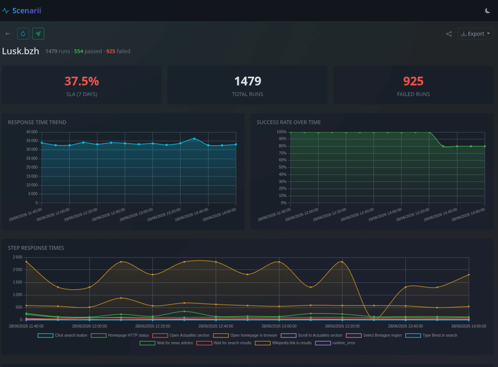
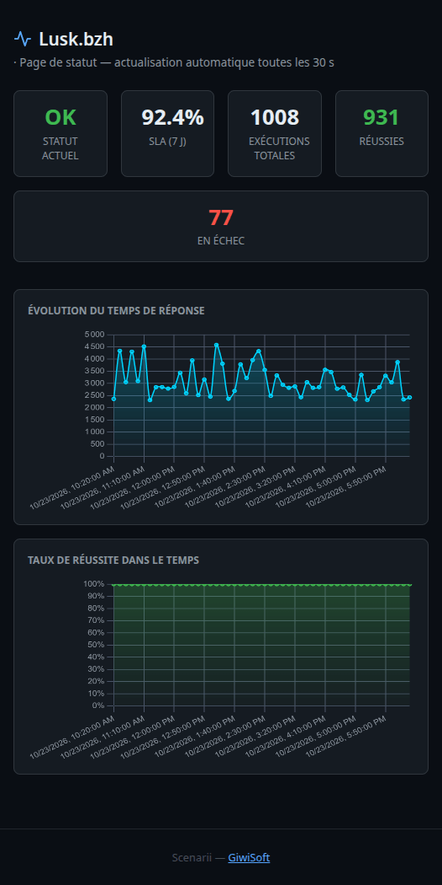
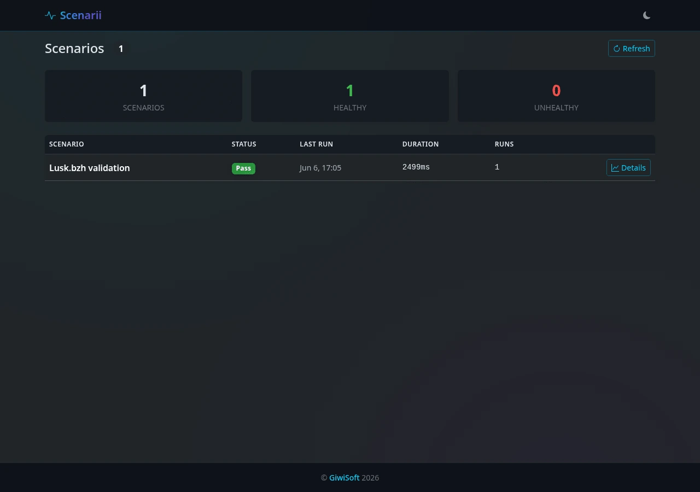

Write YAML
Define steps, assertions, variables, and conditions in a plain file. No SDK, no test code.
Self-hosted · open source
Write YAML. Run HTTP or browser checks on cron. Get alerted when something breaks.

How it works
Define steps, assertions, variables, and conditions in a plain file. No SDK, no test code.
Scenarii schedules runs, watches the scenario folder, and keeps every result in SQLite.
Failures and recoveries go to Telegram, Slack, Discord, email, or your own webhook.
# Run every 5 minutes
name: API health check
schedule: "*/5 * * * *"
base_url: https://api.example.com
steps:
- name: Get health
action: http.get
url: /health
expect:
status: 200
response_time_under: 3000
- name: Verify build
action: http.get
url: /health
expect:
json_path: $.build
json_value: "ok"
- name: Create session
action: http.post
url: /sessions
body:
user: monitor
expect:
status_in: [200, 201]No external database. No proprietary test cloud. A small service that watches your sites and tells you the truth.

SLA, response-time trends, success rate, step timings, and every run in one place.
Sent on state transitions, with retry and exponential backoff. Not on every single run.
Everything lives in one file. Backups are a copy, not a migration project.
WebSocket progress for every step while a run is in flight.
Per-scenario status pages with charts. No auth, no dashboard access.
/public/status/checkout-flow
Run, step, duration, success, and delivery metrics. Scrape it and move on.
Settings and the scenario folder are watched. Add, rename, or remove YAML without a restart.
Turn one schedule off from the dashboard without deleting the scenario file.
Create, import, and edit YAML in the browser with syntax highlighting.
GET, POST, PUT, PATCH, DELETE with headers, JSON body, and form data on native fetch.
Validate, trigger, and manage from the terminal. 30+ REST endpoints power the dashboard.
Multi-arch image for amd64 and arm64, non-root, with a healthcheck and dumb-init.
Built-in runner covering the queue, state machine, variable interpolation, and YAML parsing.
Session cookies, local roles, OIDC group mapping, and an API key for the metrics endpoint.
Steps, expectations, extraction variables, and conditions. The API and the browser use the same file format.
# scenarios/example.yml
name: API health check
description: Verify API health every 5 minutes
schedule: "*/5 * * * *"
base_url: https://jsonplaceholder.typicode.com
steps:
- name: Get posts
action: http.get
url: /posts/1
expect:
status: 200
response_time_under: 3000
- name: Verify JSON content
action: http.get
url: /posts/1
expect:
status: 200
json_path: $.userId
json_value: 1
- name: Create a post
action: http.post
url: /posts
body:
title: foo
body: bar
userId: 1
headers:
Content-Type: application/json
expect:
status: 201# scenarios/browser-example.yml
name: Browser form test
description: Test page load and content rendering
schedule: "*/10 * * * *"
base_url: https://example.com
steps:
- name: Open page
action: browser.navigate
url: /
- name: Verify page loaded
action: browser.wait_for
selector: body
expect:
has_text: "Example"
- name: Fill the form
action: browser.fill
selector: "#name"
value: "Jane Doe"
- name: Submit
action: browser.click
selector: "#submit"
- name: Wait for result
action: browser.wait_for
selector: ".success-message"
timeout: 5000
expect:
has_text: "Thank you"
- name: Screenshot
action: browser.screenshot
value: /tmp/screenshot.png# scenarios/mixed.yml
name: Mixed browser and HTTP
base_url: https://example.com
steps:
- name: Open page
action: browser.navigate
url: /
expect:
has_text: "Example"
- name: Check external API
action: http.get
url: https://jsonplaceholder.typicode.com/posts/1
expect:
status: 200
json_path: $.id
json_value: 1name: Conditional scenario
base_url: https://jsonplaceholder.typicode.com
steps:
- name: Login
action: http.post
url: /auth/login
body:
username: admin
password: secret
expect:
status: 200
variables:
token: $.access_token # extract from response
- name: Dashboard check
action: http.get
url: /api/dashboard
condition: # skip if Login failed
if_step: "Login"
if_success: true
headers:
Authorization: "Bearer {{token}}"
expect:
status: 200name: Variable extraction demo
variables: # resolved before the first step
API_TOKEN: "{{env.API_TOKEN}}"
API_BASE: "{{env.API_BASE:-https://jsonplaceholder.typicode.com}}"
base_url: "{{API_BASE}}"
headers: # shared by every HTTP step
Authorization: "Bearer {{API_TOKEN}}"
steps:
- name: Get first post
action: http.get
url: /posts/1
expect:
status: 200
variables:
postTitle: $.title # extracted from response
postId: $.id
- name: Get user for post
action: http.get
url: /users/{{postId}}
expect:
status: 200
- name: Verify content
action: http.get
url: /posts/{{postId}}
expect:
body_contains: "{{postTitle}}"{{env.NAME}} reads the process environment and {{NAME:-fallback}} applies when a value is missing or empty. Step headers override scenario headers by name.
Dark and light themes, WebSocket updates, trend charts, a seven-day SLA, and shareable public status pages.

Every page is protected, including the dashboard and API. Only the public status pages and health endpoints are open.
First start creates an admin and prints a generated password once in the logs.
admin manages users, roles, and passwords.user browses scenarios, triggers runs, and pauses schedules.# add, promote, reset, delete
node dist/index.js user add bob
node dist/index.js user role bob admin
node dist/index.js user passwd bob
node dist/index.js user del bobPoint Scenarii at your provider and roles follow group membership on every login.
username_claim falls back to preferred_username, email, then sub.groups_claim accepts arrays, strings, or comma-separated lists.admin_group grants admin. Everyone else gets user.auth:
oidc:
issuer_url: "https://accounts.google.com"
client_id: "YOUR_CLIENT_ID"
client_secret: "YOUR_SECRET"
username_claim: "preferred_username"
groups_claim: "groups"
admin_group: "scenarii-admins"Full authentication reference for route rules, role table, and provider notes.
No managed service, no external database. Bring a container and a folder of YAML.
git clone https://github.com/Giwi/giwisoft-scenarii.git
cd giwisoft-scenarii
npm install
npm run build
# start the server and scheduler
node dist/index.js server
# or run one scenario once
node dist/index.js --once scenarios/example.ymldocker pull ghcr.io/giwi/giwisoft-scenarii:latest
mkdir -p scenarios db
cp settings.example.yaml settings.yml
docker run -d \
--name scenarii \
-p 3000:3000 \
-v $(pwd)/scenarios:/scenarios \
-v $(pwd)/db:/app/db \
-v $(pwd)/settings.yml:/app/settings.yml:ro \
ghcr.io/giwi/giwisoft-scenarii:latestOpen http://localhost:3000. The first start prints a generated password for the admin user in the logs.
Scenarios load from ./scenarios. Add, remove, or rename a YAML file and the server picks it up within five seconds.
Settings live in settings.yml and reload on save. Notifications are off until you configure a channel.
Images are published for linux/amd64 and linux/arm64.
Reference
The details that belong in docs, not in the pitch.
Route protection, local roles, and OIDC group mapping.
Authentication is on by default. Every page is private except the public status pages, and every API route needs a session cookie except health, status, metrics, and auth endpoints. Set auth.enabled: false to turn it off.
| Role | Can do |
|---|---|
admin | Everything a user can, plus add, promote, demote, and delete users. |
user | Browse scenarios, view history and charts, trigger and pause runs. |
An admin can neither delete their own account nor change their own role, so the last admin cannot be locked out of user management.
username_claim is used as the local username. Unset, it falls back to preferred_username, then email, then sub.groups_claim is read as a group list. Arrays, plain strings, and space or comma separated strings are accepted. groups and roles are fallbacks.admin_group membership grants the admin role. Everyone else gets user. Without it, every OIDC user is a plain user.auth:
enabled: true
default_user: admin
default_user_role: admin
oidc:
issuer_url: "https://accounts.google.com"
client_id: "YOUR_CLIENT_ID"
client_secret: "YOUR_CLIENT_SECRET"
redirect_uri: "http://localhost:3000/api/auth/callback"
username_claim: "preferred_username"
groups_claim: "groups"
admin_group: "scenarii-admins"Five channels, state transitions, per-scenario overrides, retries.
Alerts fire when a scenario changes state: pass to fail, or fail to pass. Delivery retries three times with exponential backoff. The server watches settings.yml and reloads it on change.
| Channel | Configuration |
|---|---|
| Telegram | TELEGRAM_BOT_TOKEN and TELEGRAM_CHAT_ID, or the settings file. |
SMTP (host/port, optional auth, TLS/STARTTLS, and certificate verification with a custom CA) or Mailgun API key and domain. Multiple recipients. Daily report at 08:00. | |
| Slack | Webhook URL. JSON payload with scenario, status, and duration. |
| Discord | Webhook URL. Embedded message with color-coded pass or fail. |
| Generic webhook | Any endpoint that accepts the JSON payload. |
storage:
retentionDays: 30
backup:
enabled: true
cron: "0 4 * * *"
notifications:
telegram:
enabled: true
bot_token: "YOUR_TOKEN"
chat_id: "YOUR_CHAT_ID"
email:
enabled: true
from: "scenarii <noreply@your.domain>"
to:
- "admin@example.com"
smtp:
host: "smtp.example.com"
port: 587
username: "your-username"
password: "your-password"
tls: false
rejectUnauthorized: true # false only for self-signed relays
# ca: "-----BEGIN CERTIFICATE-----..." # extra CA, optional
# Or Mailgun: mailgun: { api_key: "...", domain: "..." }
slack:
enabled: true
webhook_url: "https://hooks.slack.com/..."
discord:
enabled: true
webhook_url: "https://discord.com/api/webhooks/..."
webhook:
enabled: true
url: "https://example.com/scenarii"scenarios:
my-scenario:
ignoreHTTPSErrors: true
timeout: 60000
notifications:
enabled: falseSecrets can be overridden with environment variables such as TELEGRAM_BOT_TOKEN, MAILGUN_API_KEY, MAILGUN_DOMAIN, SMTP_HOST, SMTP_PORT, SMTP_USERNAME, SMTP_PASSWORD.
Methods, expectations, and step options.
Every step needs a name and an action. HTTP steps use native fetch. No browser or Playwright required.
HTTP steps do not retry by default. Set retries to retry a failed request or expectation, and retry_delay (ms) to control the wait between attempts.
| Action | Required | Optional |
|---|---|---|
http.get | url | headers, expect |
http.post | url | headers, body, expect |
http.put | url | headers, body, expect |
http.patch | url | headers, body, expect |
http.delete | url | headers, expect |
| Expectation | Description |
|---|---|
status: 200 | Exact HTTP status code match. |
status_in: [200, 201] | Status code is one of the listed values. |
body_contains: "text" | Response body contains the string. |
body_matches: "regex" | Response body matches the regex. |
header_contains: "Content-Type: json" | Header contains the value, in "HeaderName: value" form. |
header_matches: "X-RateLimit: \\d+" | Header matches the regex, in "HeaderName: regex" form. |
json_path: "$.user.id" | Extract a JSON path, optionally check json_value. |
json_value: 42 | Value at json_path must match. |
response_time_under: 3000 | Response time must be under the given milliseconds. |
body_schema: { type: object, required: [id] } | Validate the JSON body. Supports type, properties/required, items, enum, pattern, min/max, and nullable. |
| Field | Type | Description |
|---|---|---|
timeout | number | Per-step timeout. Default 30s for browser, 10s for HTTP. |
condition | object | { if_step: "Step name", if_success: true } skips unless the named step matched. |
variables | object | Extract from JSON responses: { varName: "$.json.path" }. Use {{varName}} later. Missing variables fail the step before the request is sent. |
expect | object | Assertions on status, body, headers, JSON, and response time. |
Lightpanda via Playwright CDP, with retries.
Browser steps run through a headless Lightpanda instance. Failed steps retry twice, waiting retry_delay ms (default 1000) between attempts. Override per step with retries and retry_delay. browser.evaluate, browser.screenshot, and browser.screenshot_compare never retry.
| Action | Fields | Description |
|---|---|---|
browser.navigate | url | Navigate. Falls back to domcontentloaded if load does not fire. |
browser.click | selector | Click with actionability checks: visible, enabled, stable, in viewport. |
browser.fill | selector, value | Fill using native setters, reliable with React and Angular controls. |
browser.type | selector, value | Type and dispatch input plus change. |
browser.select | selector, value | Select an option from a <select>. |
browser.check | selector | Check a checkbox or radio button. |
browser.uncheck | selector | Uncheck a checkbox. |
browser.wait_for | selector, timeout, expect | Wait for an element. Check has_text, not_has_text, or url_contains. |
browser.evaluate | script | Run JavaScript in the page context. |
browser.scroll | value or selector | Scroll by pixels, or scroll an element into view. |
browser.screenshot | value (path) | Full-page screenshot to the given path. |
browser.screenshot_compare | value (baseline path) | Compare against a baseline. Creates it on first run, reports diff percentage after. |
Validate, trigger, inspect, and configure.
# Start API server and dashboard
node dist/index.js server -p 3000 --db db/scenarii.db --scenarios-dir ./scenarios
# Validate without running (checks schema, unknown fields, cron, required fields)
node dist/index.js validate scenarios/example.yml
node dist/index.js validate --all --json
# Run immediately (exits 1 on failure; add --fail-on none to always exit 0)
node dist/index.js trigger scenarios/example.yml
# Scheduled scenarios and storage status
node dist/index.js status
# Generate a settings template
node dist/index.js config --init| Command | Description |
|---|---|
server | HTTP server, dashboard, scheduler, and WebSocket. Scenario folder rescanned every 5s. |
validate <file> | Parse and validate a YAML file without executing it. |
trigger <file> | Run immediately, with no scheduling. |
status | List scheduled scenarios and show database connectivity. |
user <action> | list, add, passwd, role, del. |
config --init | Generate settings.yaml with channels commented out. |
| Server option | Default | Description |
|---|---|---|
-p, --port | 3000 | HTTP listen port. |
--db | db/scenarii.db | SQLite database path. |
--scenarios-dir | ./scenarios | YAML directory, watched every 5s. |
--settings | auto-detect | settings.yaml path. Hot-reloaded. |
30+ endpoints behind the dashboard.
# Scenarios
GET /api/scenarios ?tag=critical
POST /api/scenarios/import { "yaml": "..." }
GET /api/scenarios/export YAML bundle
GET /api/scenarios/:name ?limit=&offset=&days=
GET /api/scenarios/:name/history
POST /api/scenarios/:name/run
POST /api/scenarios/:name/cancel
POST /api/scenarios/:name/pause
POST /api/scenarios/:name/resume
GET /api/scenarios/:name/config
PUT /api/scenarios/:name/config
DELETE /api/scenarios/:name/config
GET /api/scenarios/:name/export/json
GET /api/scenarios/:name/export/csv
GET /api/scenarios/:name/sla ?days=7
# Authentication
POST /api/auth/login
GET /api/auth/oidc
GET /api/auth/callback
GET /api/auth/me
POST /api/auth/logout
# Users (admin only)
GET /api/auth/users
POST /api/auth/users
PUT /api/auth/users/password
PUT /api/auth/users/role
DELETE /api/auth/users/:username
# Public and system
GET /api/public/scenario/:name
GET /api/status
GET /api/health
POST /api/backup
GET /api/tags
GET /api/metrics Prometheus formatPrometheus export and WebSocket payloads.
Scrape /api/metrics with Prometheus or any OpenMetrics collector. Protect it with the api_key setting and send the key in the Authorization header.
# HELP scenarii_scenario_runs_total Total run count
# TYPE scenarii_scenario_runs_total counter
scenarii_scenario_runs_total{scenario="Lusk.bzh"} 142
scenarii_scenario_duration_ms{scenario="Lusk.bzh"} 2540
scenarii_scenario_success{scenario="Lusk.bzh"} 1
scenarii_scenario_last_run_seconds{scenario="Lusk.bzh"} 1.756e9
scenarii_step_duration_ms{scenario="Lusk.bzh",step="Homepage",action="http.get"} 127
scenarii_step_success{scenario="Lusk.bzh",step="Homepage",action="http.get"} 1
scenarii_notification_delivery_total{status="success"} 12scrape_configs:
- job_name: "scenarii"
authorization:
credentials: "YOUR_API_KEY"
static_configs:
- targets: ["localhost:3000"]
metrics_path: "/api/metrics"Run completion events:
{
"type": "scenario_run",
"scenario_name": "Lusk.bzh validation",
"success": true,
"duration_ms": 2500,
"timestamp": "2026-06-06T12:00:00.000Z"
}Step progress, streamed while a run is in flight:
{
"type": "step_progress",
"scenario_name": "Lusk.bzh validation",
"step_name": "Homepage",
"action": "http.get",
"status": "running",
"timestamp": "2026-06-06T12:00:00.000Z"
}One container. No external database. Your scenarios, results, and credentials stay on your infrastructure.